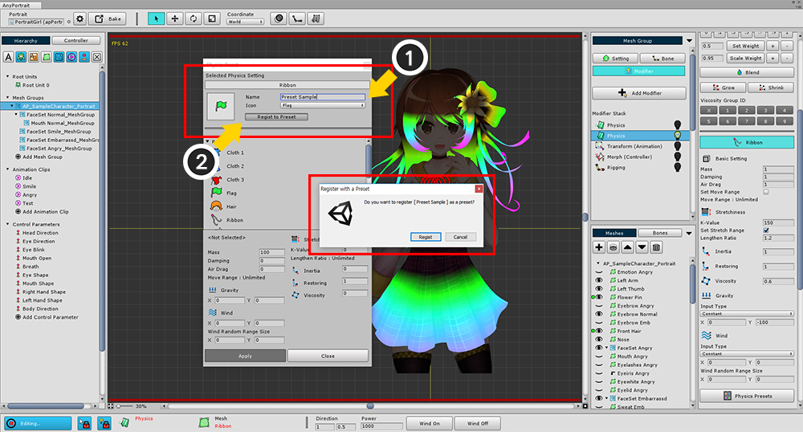

AnyPortrait > 메뉴얼 > 물리 모디파이어 프리셋
물리 모디파이어 프리셋
1.0.0

물리 모디파이어 프리셋을 이용하면 손쉽게 물리 재질을 만들 수 있고, 다른 메시에 재질을 복사하는 것도 가능합니다.
(1) Physics Presets 버튼을 누르면 물리 프리셋 다이얼로그를 열 수 있습니다.
물리 프리셋에는 기본적으로 몇개의 자주 사용될 물리 재질이 있습니다.
바로 사용하는 것도 가능하며, 직접 프리셋을 만들 수도 있습니다.

1. 물리 프리셋 저장 영역
2. 물리 프리셋 리스트
3. 선택한 프리셋의 물리 재질 속성
4. 물리 재질 적용 / 창 닫기
물리 프리셋 저장하기

현재 물리 재질을 프리셋으로 저장합니다.
(1) 프리셋의 이름과 아이콘을 선택합니다.
(2) Regist to Preset 버튼을 눌러서 저장합니다.
물리 프리셋 적용하기

(1) 적용하고자 하는 프리셋을 선택합니다.
(2) Apply 버튼을 눌러서 적용합니다.
만약 저장된 프리셋을 삭제하고 싶다면 (3) Remove Preset 버튼을 눌러서 삭제할 수 있습니다.